Kongens Tisted
Ziemlich feinkörniger, geschichteter, grauer und roter Granit mit grobem Korn gestreut und reichlich schwarzen Einschlüssen
Höhe über der Erde: 126 cm
Größte Breite: 60 cm
Größte Dicke: 60 cm
Runenhöhe: 10 - 15,5 cm
Runeninschrift :
Asgot, Tygotes Sohn, errichtete diesen Stein für seinen Bruder Esge
38 - Kongens Tisted (auch Ravnkilde 2 Stein oder Lille Rørbæk Stein) - Letztes Update 24.08.2025
Listennummer : DR 135 / DK NJy 68
|
Navidaten: 56.75019 9.59020
oder Elbjergvej 3, Kongens Tisted - 9610 Nørager
|
Transliteration: + ąsgutr : tuguta : sun : risþi : stin : ift | isgi : bruþur : sin
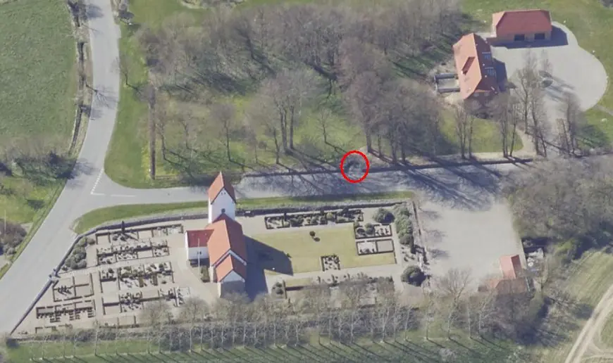
Das ist ein Luftfoto vom 19.04.2023 von Skråfoto - Lizenz: CC BY 4.0 - das die Kirche von Kongens Tisted mit dem darüberliegenden Pfarrhof zeigt. Skråfoto ist eine Webanwendung, die von Klimadatastyrelsen weltweit kostenlos bereitgestellt wird. Die Aufnahmen werden seit 2017 alle zwei Jahre erneuert und neben einer Senkrechtaufnahme wird ein Schrägbild aus jeder Himmelsrichtung angeboten, das man über eine Adresssuche aufrufen kann. Den Standort des Runensteins habe ich rot eingekreist.
Der Runenstein befindet sich heutzutage zwischen dem Pfarrhof und der über der Straße liegenden Kirche. Vom Garten des Pfarrhofes wurde ein Halbrund ausgespart und dort der Runenstein platziert.
Die Inschrift beginnt links unten, folgt der natürlichen Steinform (Konturanordnung) und endet darüber in der mittleren Linie von unten nach oben gelesen.
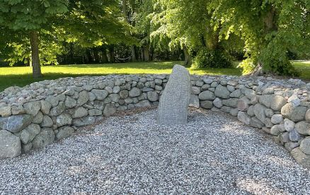
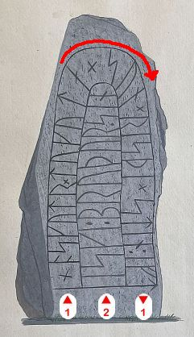
Sie wird von den Runenforschern in die Zeit von 970 - 1020 n.Chr. datiert. Der Name "Tygote" wird von der schwedischen Runenforscherin Lena Peterson (*27.01.1939) in ihrem Werk "Nordiskt runnamslexikon (Ausgabe 2007, S. 302 - tuguta)" uninterpretiert gelassen. Bei einem "Schreibfehler" der ersten Rune könnte man laut anderen Runologen aber auf diese Interpretationsmöglichkeit kommen: "Øygoti". Der Name ist bekannt aus dem verschwundenen Hobro-Stein 1 (DR 126 / DK Njy 73 - siehe AM 367 fol, S. 7r - rechts unten - Zeichnung von Jon Skonvig (*1600 - 1664, Pfarrer und der Runenzeichner für Ole Worm)
Dieser Runenstein wurde laut dem Eintrag in Lis Jacobsen/Erik Moltke - Danmarks Runeindskrifter - 1942 - Nr. 135 - im Jahr 1847 auf einem kleinen Hügel liegend, in der Nähe des Dorfes Lille Rørbæk, entdeckt. Die Fundstelle würde dicht beim Bach, etwa 100 Schritte vom Brastrup See entfernt, liegen. Die genannten Örtlichkeiten finden sich aber heutzutage so nicht. Über Google Maps landet man mit einer Suche nach "Lille Rørbæk" auf der Insel Seeland. Den See findet man überhaupt nicht. Etwa 11 km südöstlich vom heutigen Runenstein Standort ist aber der Ort (Store) Rørbæk gelegen. In diesem Eintrag von Trap Danmark V findet sich ein historischer Kartenausschnitt um 1955 der es erklärt. In diesen beiden historischen Karten von "Historiske Kort" aus den Jahren 1800-1820 (Titel: Lille-Rørbæk By - 1911 kopiert von Anders Knudsen - Joh. Pedersen - Größe 82 x 94) und 1880-1930 (Lille Rørbæk, Zeichner L. Jense) und findet sich der Brastrup See unmittelbar links von der Ansiedlung. Der See wurde in den 1940er Jahren trockengelegt. Dies wurde mir auf Anfrage vom lokalen Archiv am 09.11.2024 mitgeteilt; genauer wissen die es dort auch nicht mehr. Über diesen Link bei arkiv.dk sieht man eine Foto des Sees um das Jahr 1915.
Der Ort hieß 1231 noch Tystate. Im Jahr 1429 wird die Stadt als Kongens Tisted erwähnt. Hierzu werden verschiedene Erklärungen gegeben: Tisted ist eine Verfälschung von "Der Zehnt", d. h. dem Ort, an dem die zu zahlende Zehnt-Steuer für den König eingesammelt wurde. Oder eine Verfälschung von Thing-Stätte. Eine andere wahrscheinliche Erklärung ist, dass der König das Land in Kongens Tisted besaß. Während der Pest in den 1340er Jahren soll die gesamte Bevölkerung der Gemeinde ausgestorben sein und das Land ging somit an den König. Dass der König Land in Kongens Tisted besaß, geht aus einer Quelle von 1231, dem "Kong Valdemars II. Jordebog" von König Valdemar II. (der Sieger) hervor.
Der erste schriftliche Beleg entstammt einem Schriftstück mit einer Zeichnung datiert auf den 03.01.1848 von Pastor Jørgen Frederik Jörgensen (*18.10.1807 - 07.03.1876, Pfarrer, Folketing Mitglied von 1849 bis 29.10.1851 - link-LIVES),
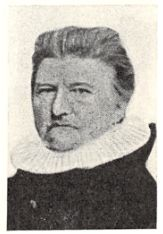
Bildquelle: Rigsdagens Medlemmer gennem Hundrede Aar 1848-1948 : Bind I (S. 279 - S. 286 in der pdf-Datei) - Lizenz: CC-BY-SAder sich in der Sammlung "Efterladte papirer (Nachlass)" von Carl Christian Rafn (*16.01.1795 - 20.10.1864, Altertumsforscher - link LIVES - Bestattungsprotokoll)
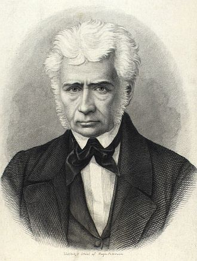
Bildquelle: Zeichner Magnus Petersen - Det Kgl. Biblioteks billedsamling - Lizenz: Public Domainin der Königlichen Bibliothek in Kopenhagen (Den sorte Diamant) erhalten hat (NKS 1599 folio). Auf meine Anfrage hin hat sich eine freundlichen Mitarbeiterin das Material aus dem Lager kommen lassen, für mich dieses Foto angefertigt und es mir am 08.11.2024 per E-Mail zugesandt. Tusind tak!.
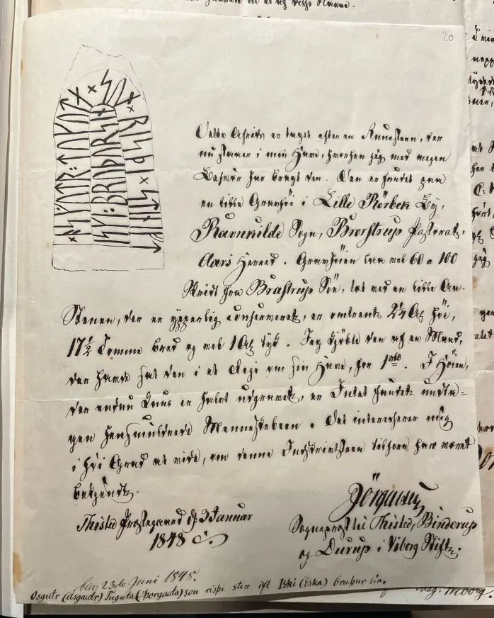
Wann der Brief, der unten links noch den Eintrag "23. Juni 1848" aufweist, bei Rafn einging, bleibt meines Erachtens offen. Bei Jacobsen/Moltke - Danmarks Runeindskrifter wird 29.06.1848 angeführt. Rafn hat seinerseits mit Datum vom 10. Juni 1848 einen Brief an P.G. Thorsen - siehe unten - geschrieben und diesem über den Bericht des Pfarrers berichtet.
Der Brief ist in der bis 1875 in Dänemark gebräuchlichen Frakturschrift "Gotisk håndskrift" gehalten.
Der Text dieses Briefes lautet in lateinischer Schrift wie folgt (Quelle: Aufsatz von Ansgar Havbæk Madsen mit dem Titel "Om runestenen i Kgs. Tisted og om den "gale" præst, som stjal den" - Übersetzung: Über den Runenstein in Kgs.Tisted und über den verrückten Priester, der ihn gestohlen hat).
Dette Afrids er taget efter en Runesten, der nur står i min Have, hvorhen jeg med megen Besvær har bragt den. Den er fundet på en lille Gravhøj i Lille Rørbek By, Ravnkilde Sogn, Brorstrup Pastorat, Års Herred. Gravhøjen lå ved 60 til 100 Skridt fra Brastrup Sø, tæt ved en lille Å. Stenen, der er ypperlig konserveret, er omtrent 2,25 Alen høj, 17,5 Tømmer bred og vel 1 Alen tyk. Jeg købte den af en mand, der havde sat den i et Dige om sin Have, for 1 Rigsdaler. I Højen, der endnu kun er halvt udgravet, er intet fundet, undtagen hensmuldrende Menneske-ben. Det interesserer mig i høj Grad at vide, om denne Indskrift-sten tilforn har været bekendt.
Thisted Præstegård, d. 3. Januar 1848
Jørgensen - Sognepræst til Thisted, Binderup og Durup i Viborg Stift
Anmerkung: Der Rigsdaler war in einer kurzen Phase der dänischen Währungsgeschichte von 1813 an die Währungseinheit im dänischen Gesamtstaat. 1873 wurde ein neues Münzgesetz verabschiedet, das am 1. Januar 1875 in Kraft trat. Zu dieser Zeit wurden die dänische Krone und Öre eingeführt und durch den bis dahin gültigen Reichstaler (Rigsdaler) ersetzt. Der dänische Reichstaler wurde dabei im Verhältnis 1:2 getauscht, man bekam 2 Kronen für einen Taler.
Text Übersetzung: Diese Zeichnung stammt von einem Runenstein, der nun in meinem Garten steht, wohin ich ihn mit großer Mühe gebracht habe. Es wurde auf einem kleinen Grabhügel in Lille Rørbæk, Gemeinde Ravnkilde, Brorstrup Pastorat, Års Herred, gefunden. Der Grabhügel lag 60 bis 100 Schritte vom Brastrup See entfernt, in der Nähe eines kleinen Baches. Der hervorragend erhaltene Stein ist etwa 2,25 Ellen hoch, 17,5 Ellen breit und etwa 1 Elle dick. Ich habe ihn von einem Mann für 1 Rigsdaler gekauft, der ihn in einer Mauer um seinen Garten abgelegt hatte. In dem Hügel, der immer noch nur zur Hälfte ausgegraben ist, wurde außer zerfallenen menschlichen Knochen nichts gefunden. Es interessiert mich sehr zu wissen, ob dieser Stein mit Inschrift schon in der Vergangenheit bekannt war."
Thisted Pfarrhof, d. 3. Januar 1848
Jørgensen - Pfarrer in Thisted, Binderup und Durup in der Diözese Viborg
In der "Antiquarisk tidsskrift, udgivet af det Kongelige nordiske oldskrift-selskab, Ausgabe 1846-1848" findet sich unter den Mitteilungen an die Altertümerkommission dazu auch dieser Bericht auf der S. 86.
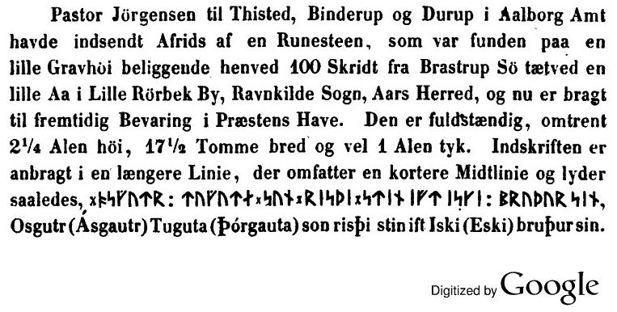
In der Hinterlassenschaft von Prof. P. G. Thorsen (*07.08.1811 - 06.05.1883, Bibliothekar, Runenforscher und Historiker - link-LIVES - Artikel: Levnedsbeskrivelser af de ved Københavns Universitets Firehundredaarsfest promoverede Doktorer, Illustreret Tidende 1882, Nr. 1235 - vom 27.05.1833 / Grabstein in Varde / Eheschließung in Varde am 19. August 1848)
Artikel: Levnedsbeskrivelser af de ved Københavns Universitets Firehundredaarsfest promoverede Doktorer, Illustreret Tidende 1882, Nr. 1235 - vom 27.05.1833 / Grabstein in Varde / Eheschließung in Varde am 19. August 1848
 Fotografie
zw. 1863-1900 von
Fotograf Budtz Müller (*26.12.1837 -
30.12.1884) -
Det Kgl. Biblioteks billedsamling - Lizenz:
Public Domain
Fotografie
zw. 1863-1900 von
Fotograf Budtz Müller (*26.12.1837 -
30.12.1884) -
Det Kgl. Biblioteks billedsamling - Lizenz:
Public Domain
in der Königlichen Bibliothek in Kopenhagen (Nähere Informationen siehe unten) fand ich bei meinem dortigen Besuch am 27.09.2022 in der Pappschachtel mit der Nummer 6 diesen Brief von Carl Christian Rafn, den er eindeutig lesbar auf den 10. Juni 1848 datiert hat.

Der Text lautet:
(modtg. 11. Juni, Pfingstsonntag)
Ravnkildstenen
Kjøbenhavn, den 10de Juni 1848.
Fra Pastor Jörgensen har jeg modtaget
underretning om en Runesteen, som har lig-
get paa en lille gravhøj i Lille Rørbek By,
Ravnkilde Sogn, Aars Herred, Aalborg Amt
(annex til Brorstrup) og som nu er bragt til
fremtidig Bevaring in Præstens Have!
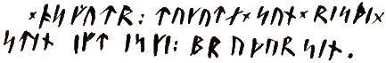
Ved at anmelde denne Meddelelse i Beret-
ningen var det passende at kunne til-
föie, om denne Steen et tidligere bekjendt.
Hav den godhed at underrette mig om
de har truffet den anmeldt forhen.
Med hensyn til Navnene er den jo
ret interessant.
Med særdeles Agtelse
Rafn
Hr. Bibliothecar Thorsen
Übersetzung: Von Pastor
Jörgensen habe ich Informationen über einen Runenstein erhalten, der auf einem
kleinen Grabhügel in Ort Lille Rørbek, Gemeinde Ravnkilde, Aars Herred, Kreis
Aalborg (Annex von Brorstrup) gelegen hat und nun zur künftigen Aufbewahrung zum
Pfarrhof gebracht wurde!
Um diese Mitteilung in den Berichten (der
Alterümerkommission) zu veröffentlichen wäre es angebracht, hinzuzufügen, ob
dieser Stein vorher bereits bekannt war. Haben sie die Güte mich zu informieren,
wenn er schon zuvor einmal angemeldet wurde.
Was die Namen angeht, ist er ziemlich interessant.
Mit großem Respekt
Rafn
Prof. Jens Jacob Asmussen Worsaae (*14.03.1821 - 15.08.1885, dänischer Archäologe und Vorgeschichtler - link-LIVES - Bestattungsprotokoll)
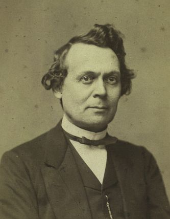
hat zu dem Runenstein Ravnkilde (2) in seinem Notesbog X., aus dem Jahr 1850, einen Eintrag auf der S. 89 vorgenommen.


Dessen Tagebücher werden in Kopenhagen in dem "Antikvarisk-Topografisk Arkiv" aufbewahrt, worüber ich bei meinem Besuch am 27.09.2022 diese Fotos anfertigen konnte.
Von Rasmus Henrik Kruse (*07.08.1796 - 30.05.1877, Landschaftsmaler - link-LIVES - Heirat 21.12.1851)
 Bildquelle:
Det Kgl. Biblioteks billedsamling
-
Lizenz:
Public Domain
Bildquelle:
Det Kgl. Biblioteks billedsamling
-
Lizenz:
Public Domain
der zahlreiche Runensteine gezeichnet hat, hat sich im "Antikvarisk-Topografisk Arkiv" in Kopenhagen in seinen Abhandlungen mit dem Titel "Nørre Jyllands Mærkværdigheder i det 19. Aarh. Hs. Bd 1-2 (med) Tillæg 1-2" eine Zeichnung von 1856 und auch seine handschriftlichen Aufzeichnungen zu dem Runenstein erhalten - Tillæg 1, S. 9 / 9 Rückseite - Zeichnung e.
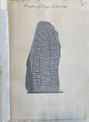 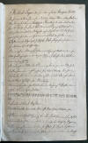 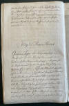


Auch dieses Werk wird heute in Nationalmuseum in Kopenhagen, Antikvarisk-Topografisk Arkiv, aufbewahrt. Dort durfte ich am Dienstag, 27.09.2022, zu Gast sein und die vier Bände in Händen halten und fotografieren.
George Stephens (*13.12.1813 - 09.08.1895, englischer Archäologe und Philologe)
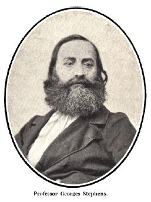
hat in seinem 1867-68 veröffentlichten Werk "The old-northern runic monuments of Scandinavia and England - Volume II" auf der S. 804 einen kurzen Eintrag veröffentlicht: "...As we have here an OSGUTR UIA, SUN KIMS, so on another stone (Tisted) in the same province we have a namesake : OSKUTR, TUKUTA SUN, RISÞI STIN IFT ISKI, BRUÞUR SIN." - Übersetzung: "...So wie wir hier einen OSGUTR UIA, SUN KIMS haben, so haben wir auf einem anderen Stein (Tisted) in derselben Provinz einen Namensvetter: OSKUTR, TUKUTA SUN, RISÞI STIN IFT ISKI, BRUÞUR SIN..."
P.G. Thorsen hat diese Zeichnung von Prof. Julius Magnus Petersen (*04.09.1827 - 31.01.1917, Archäologischer Zeichner und Restaurator - link-LIVES - Bestattungsprotokoll)
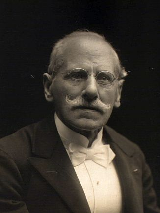
in seinem Runenwerk De danske runemindesmærker beskrevne og forklarede, anden Afdeling, Jyllands Runemindesmærker, I. Afbildninger, 1879, Nr. 47 - Eigener Scan aus dem in meinem Besitz befindlichen Exemplar - aufgenommen. Seine Studien hat er ein Jahr später - 1880 - in seinem Band II - Text auf den S. 135-136 - veröffentlicht.
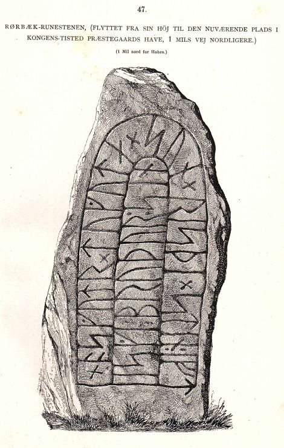
Zuvor hatte er bereits in seinem Band "De danske runemindesmærker - forklarede af P. G. Thorsen, Første Afdeling, Runemindesmærkerne i Slesvig" von 1864 auf der S. 227 ganz kurz über die Entdeckung dieses Runensteins berichtet: "...Ogsaa ere flere nyopdagede Runestene fundne paa Heden, navnlig var det Tilfælde med Ravnkilde -Stenen, der fandtes paa Stenild Hede..." - übersetzt: "...Auf der Heide wurden auch mehrere neu entdeckte Runensteine gefunden, insbesondere der Ravnkilde-Stein, der auf der Stenild-Heide gefunden wurde...".
P. G. Thorsens Nachlass (Bezeichnet als: P. G. Thorsens optegnelser, tegninger m.m. vedrørende runer og runemindesmærker - überführt aus der Kopenhagener Universitätsbibliothek 1929 - Gemäß Ministerialschreiben vom 04.03.1929; früher benannt als Additamenta 612 kvart - findet sich in der Königlichen Bibliothek in Kopenhagen unter NKS 3296 kvart (in mehreren einzelnen Pappschachteln). In der Pappschachtel Nr. 17 ist zu Kongens Tisted diese Zeichnung von Magnus Petersen verwahrt, die er auf den 30.06.1870 datiert hat.

Prof. Ludv. F. A. Wimmer (*07.02.1839 - 29.04.1920, Philologe und Runenforscher - link-LIVES - Bestattungsprotokoll - Politiets registerblade)
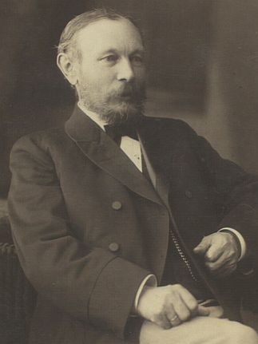
hat seine Forschungsergebnisse in seinem großformatigen Runenwerk "De danske runemindesmærker undersøgte og tolkede af Ludv. F. A. Wimmer, Andet Bind, Runestenene i Jylland og på øerne. 1899-1901, Nr. 59, S. 277 - mit dieser Zeichnung von Magnus Petersen - eigener Scan - veröffentlicht. Wimmer hat den Runenstein persönlich - in Begleitung von ihm - vor Ort am 07.August 1878 untersucht.
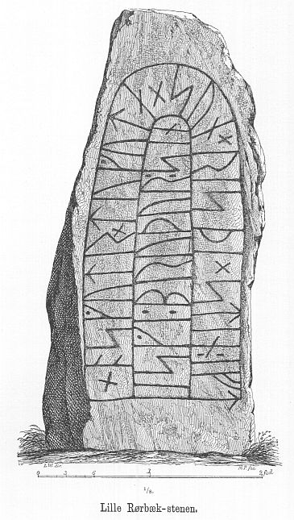
Ludv. F. A. Wimmer hat seine jahrelangen Aufzeichnungen der "Kgl. Bibliotek" in Kopenhagen überlassen. Ein Verzeichnis darüber wurde 1915 in Buchform herausgegeben - "Collectio runologica Wimmeriana: Fortegnelse over Ludv. F. A. Wimmers runologiske o. a. Samlinger i Det kgl. Bibliotek"
In seinen Unterlagen in der Königlichen Bibliothek befinden sich unter "III - Originaltegninger af de danske Runemindesmærker, udførte paa Undersøgelsesrejserne af Magn. Petersen og kontrollerede paa Stedet af Ludv. Wimmer, samt Prøvetryk af de paa Grundlag af de nævnte Tegninger, Aftryk o. s. v. til De danske Runemindesmærker" udførte Afbildninger med Wimmers Rettelser" unter der Nummer 71 diese Zeichnung von Magnus Petersen, die von ihm auf den 07.08.1878 datiert wurde.
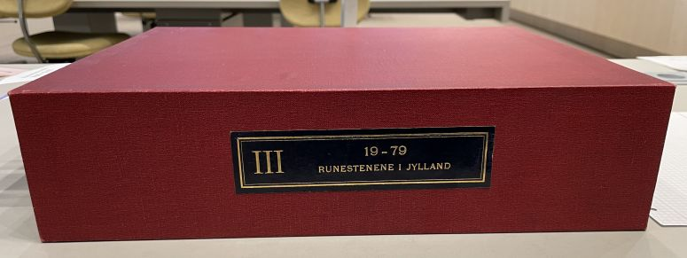
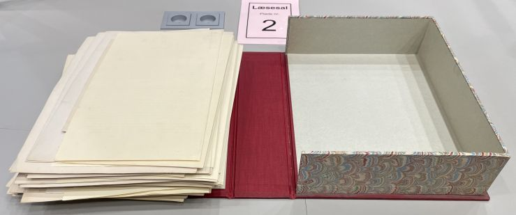

Durch Erik Moltke (*04.04.1901 - 19.10.1984, Runologe, Historiker - link-LIVES)
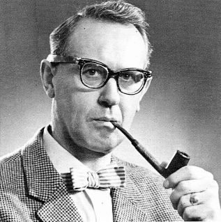
wurde diese sw Fotografie des Runensteins am 13.05.1931 aufgenommen.
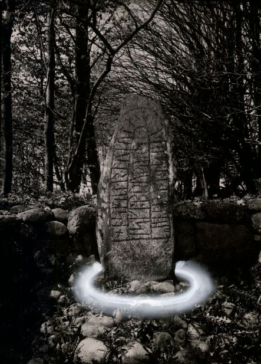
Quelle: Digitale Sammlung des Nationalmuseums in Kopenhagen - Lizenz: CC-BY-SA
Marius Kristensen (*27.04.1869 - 02.11.1941, Dr. phil., Hochschullehrer, Dänischer Sprachforscher - link-LIVES - Begravelsesprotokoller)
 Bildquelle:
Denstoredanske.lex - Lizenz:
Public Domain
Bildquelle:
Denstoredanske.lex - Lizenz:
Public Domain
hat in der Abhandlung "Danske Studier, 1935" ab der S. 171 ff. einen umfangreichen Beitrag zu der Bedeutung des Wortes "tuguta" (= Dugunda), welches in der Runeninschrift vorkommt, veröffentlicht.
Im Vorfeld zu dem 2016 erschienenen Buch von Lisbeth M. Imer (*1973, Runologin am Nationalmuseum Kopenhagen) "Danmarks Runesten - en fortælling" reiste sie mit dem Fotografen Roberto Fortuna zur Bestandsaufnahme durch die Lande. Dieser hat die Runensteine mit Schräglicht aufgenommen und darüber wirklich herausragende Fotos erzielt. Diese Fotografie stammt aus dem Oktober 2012.
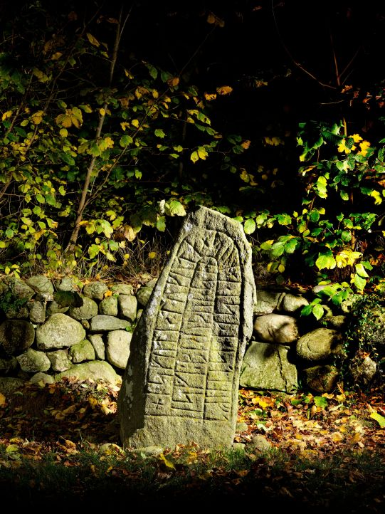
Quelle: Digitale Sammlung des Nationalmuseums in Kopenhagen - Lizenz: CC-BY-SA
Im Rahmen meiner 2022er Jütland Wikingertour war ich am Samstag, 04.06.2022 vor Ort. Die Präsentation des Runensteins - bei gleichem Standort - wurde gegenüber 2013 sehr verändert. Die Bepflanzung wurde radikal zurückgeschnitten / entfernt. Die Steinmauer wurde ordentlich ausgeputzt und das vor dem Runenstein liegende Rasenstück gegen einen Belag aus kleinen Kieselsteinen ausgetauscht. Außerdem wurde der Runenstein selbst einer gründlichen Reinigung unterzogen. Dies hat zum einen der Steinrestaurator Leif Vognsen im Jahr 2016 selbst vorgenommen, bzw. damals angeregt. (siehe unten - dessen Zustandsbericht). Aber seht selbst!
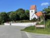 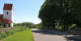 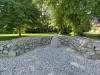 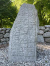 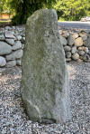 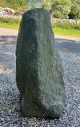 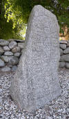 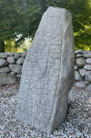 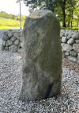 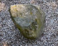


Bei meinem Besuch am Freitag, 23.08.2013, konnte ich diese Fotos fertigen:
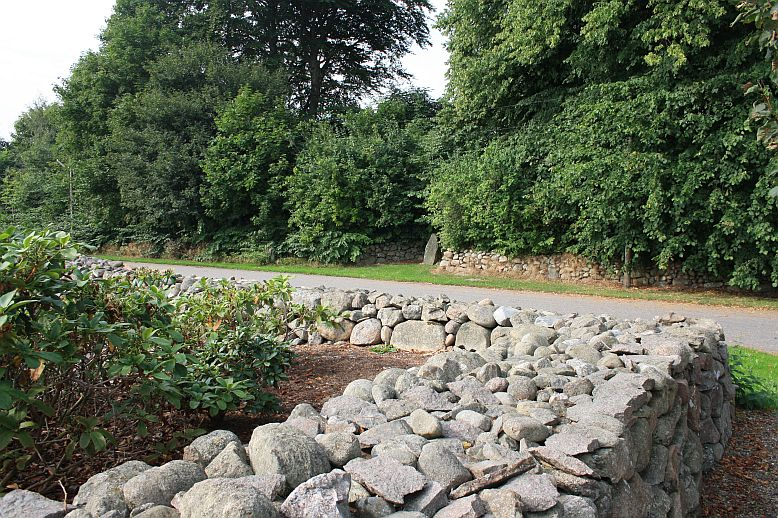
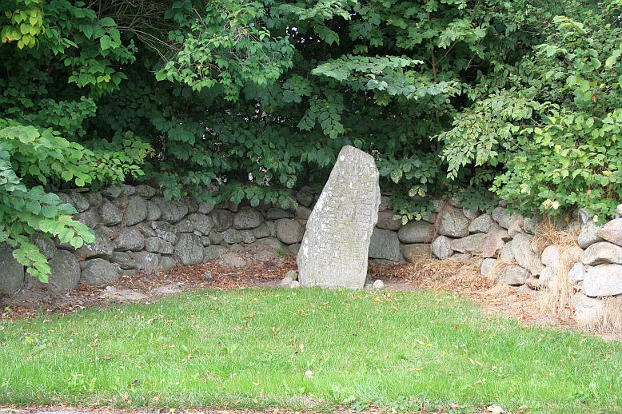
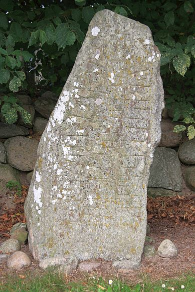
Zuvor war ich erstmals am Dienstag, 21.08.1990, vor Ort - siehe Foto linker Frame.
Den Eintrag zu diesem Runenstein aus der dänischen Runen Datenbank im Internet kann man hier abrufen.
Die Informationen in "Fund og Fortidsminder" zu dem Runenstein finden sich hier. Darin ist inzwischen dieser Zustandsbericht des Steinrestaurators Leif Vognsen aus dem Jahr 2018 eingebettet.
Über diesen Link finden sich zu dem Runenstein Informationen des Forschungsprojektes "Runes" der Akademie der Wissenschaften zu Göttingen.
Über Google StreetView sieht man den Runenstein leider nicht wirklich. Aber er steht in der Ansicht links vom Kirchturm in einer Nische der Feldsteinmauer.
Über die Webseite von www.biopix-foto.de kann man ein Foto dieses Runensteins mit rot nachgezeichneten Runen anschauen, was natürlich eine deutlich verbesserte Ansicht darstellt, auch wenn die Runen im Vergleich zu anderen Runensteinen eigentlich gut lesbar sind.